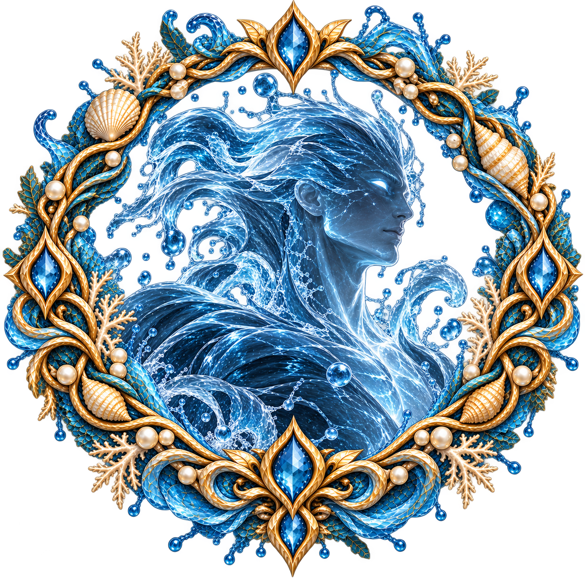

NERIAN
Idade: 28 anos
Elemento: Água
Espécie: Espírito da Natureza
Quem ele é
Nerian é o Príncipe Regente da Água e o mais velho de seis irmãos.
Desde criança, foi preparado para assumir o governo de seu reino, mas cresceu de uma maneira mais livre do que outros herdeiros. Seus pais permitiram que ele aproveitasse a infância, explorasse seu mundo e conhecesse a vida além das responsabilidades da coroa.
Para Nerian, ser regente nunca foi visto como um peso. Ele sempre soube que esse seria seu caminho e, com o tempo, passou a acompanhar seu pai e aprender diretamente através da experiência.
Hoje, é um governante respeitado e querido por seu povo. Confia nos Regentes que administram os diferentes territórios da Água e não sente necessidade de controlar pessoalmente cada situação.
Apesar de sua serenidade, existe nele uma força que poucos seriam capazes de enfrentar.
Personalidade
Nerian é justo, bom, paciente, sereno e observador.
Possui uma maneira tranquila de lidar com as situações e prefere pensar antes de agir. É alguém que escuta, observa e procura compreender diferentes pontos de vista antes de tomar uma decisão.
É naturalmente próximo de seu povo e de sua família. Não busca ser popular ou chamar atenção; essa proximidade simplesmente faz parte de sua maneira de viver.
Também é alguém que valoriza profundamente a liberdade.
Nerian não tenta controlar aqueles que ama e não precisa impor sua vontade para demonstrar sua força.
Por trás de sua tranquilidade existe, porém, um homem determinado. Quando precisa assumir sua posição como regente, sua presença se torna impossível de ignorar.
Aparência
Nerian possui aproximadamente 1,97 m de altura.
É alto, forte e atlético, mas possui um corpo mais esguio e alongado. Sua força é evidente sem que ele precise apresentar uma musculatura tão volumosa.
Sua presença é naturalmente imponente, mas sua beleza possui uma característica diferente: é elegante, harmoniosa e quase escultural, lembrando a aparência de um antigo deus.
Sua pele é clara, com um tom perolado e luminoso, possuindo um brilho natural.
Seus olhos são de um azul muito claro, quase translúcido, podendo apresentar pequenas variações conforme a iluminação.
Seus cabelos são loiros muito claros, quase brancos, longos, volumosos e levemente ondulados. Costuma usá-los soltos, parcialmente presos, com pequenas tranças ou em um rabo baixo.
Seu rosto possui traços definidos e harmoniosos, com mandíbula marcada, nariz reto e uma beleza masculina refinada.
Forma Elemental

Como Espírito da Água, Nerian também possui uma forma elemental.
Nessa forma, seu corpo assume uma estrutura humanoide formada por água cristalina azulada, completamente diferente de sua aparência humana.
A água permanece em constante movimento, formando correntes, ondas e pequenos fluxos pelo corpo. Reflexos luminosos, brilhos, gotas e partículas podem ser vistos em meio à sua forma.
Seus contornos não permanecem completamente fixos, podendo se desfazer e se recompor como a própria água.
Sua forma elemental não é simplesmente um corpo humano transformado em água.
É uma manifestação viva do próprio elemento.
Poderes
Nerian possui um domínio extremamente poderoso sobre a Água.
Diferente de outros elementais, não precisa necessariamente de movimentos físicos para controlar seu elemento. Sua principal exigência é conseguir manter a mente concentrada.
É capaz de:
- Controlar a água independentemente de sua origem;
- Moldar e movimentar diferentes volumes de água;
- Controlar rios, lagos, mares e outras fontes;
- Criar formas e armas utilizando a água;
- Moldar e endurecer a água, podendo transformá-la em lâminas;
- Influenciar a chuva;
- Utilizar a água para proteção e deslocamento;
- Perceber pessoas e locais através da água;
- Utilizar seu elemento para localizar alguém que já tenha visto anteriormente.
Sua conexão com a Água também permite que perceba a presença de pessoas próximas a fontes de água, embora a extensão dessa percepção dependa da quantidade de água disponível.
Suas emoções também influenciam seus poderes. Quanto mais agitado estiver, principalmente quando tomado pela raiva, mais difícil se torna manter o controle preciso sobre o elemento.
Nerian e seu reino
Nerian governa uma nação formada por diferentes territórios ligados pela Água.
Existem Regentes responsáveis por determinadas regiões, que enviam informações e relatórios ao príncipe.
Nerian confia em seus representantes e permite que resolvam os problemas de seus próprios territórios sempre que possível. Quando uma situação realmente exige sua presença, ele vai pessoalmente.
Sua irmã Lirian é seu principal apoio na administração do reino e uma das pessoas em quem mais confia.
Nerian gosta de governar e sente orgulho de sua posição. Para ele, ser regente não significa viver sob uma pressão constante, mas assumir uma responsabilidade que faz parte de quem ele é.
Nerian e Veyra
Veyra desperta em Nerian uma curiosidade que vai muito além de sua natureza como Espírito da Floresta.
Ele se encanta pela maneira como ela vive, pela sua liberdade e pela capacidade que possui de encontrar felicidade nas coisas simples.
Ao conhecê-la melhor, Nerian também descobre que existe muito mais em Veyra do que aparenta.
Ela é habilidosa, determinada e capaz de enfrentar situações que poderiam surpreendê-lo.
Uma das coisas que aprende ao lado dela é justamente não subestimá-la.
Nerian e sua família
Nerian é o mais velho de seis irmãos e possui uma relação próxima com todos eles.
Lirian é sua irmã mais próxima e seu principal braço direito. Quando Nerian está ausente, Lirian pode assumir suas funções e ajudar a resolver questões do reino.
Derya é responsável pelo comando dos exércitos da Água. Possui uma personalidade mais rígida e séria, mas mantém uma boa relação com os irmãos.
Lir ainda não possui responsabilidades diretas sobre o reino e demonstra grande desejo de conhecer outras nações.
As gêmeas Nereida e Nerida são as caçulas da família. Cheias de energia e curiosidade, possuem grande admiração pelo irmão mais velho.
Apesar das diferenças entre eles, Nerian é muito próximo de todos.
O que ele teme
Nerian não costuma ser dominado pelo medo.
Seu maior desafio está relacionado à própria natureza de seus poderes: perder o controle sobre suas emoções e, consequentemente, sobre a Água.
Por isso, procura manter a mente equilibrada e compreender aquilo que sente antes de agir.
Curiosidades
- É o mais velho de seis irmãos.
- Sempre soube que seria o Regente da Água.
- Nunca enxergou a regência como um fardo.
- Cresceu tendo mais liberdade durante a infância e adolescência.
- Aprendeu sobre o governo acompanhando seu pai.
- É muito próximo dos irmãos.
- Confia bastante nos Regentes de seu reino.
- Possui grande habilidade em combate, embora prefira utilizar seus poderes à distância.
- Sua força física é acompanhada por uma poderosa conexão elemental.
- Quanto mais perturbada estiver sua mente, mais difícil é controlar perfeitamente a Água.
- Consegue utilizar a água para perceber e localizar pessoas que já tenha visto.
- Sua forma elemental é completamente diferente de sua forma humana.
- É conhecido por sua serenidade, mas sua presença muda quando assume plenamente sua posição como soberano.
Três palavras
SERENO • OBSERVADOR • PODEROSO